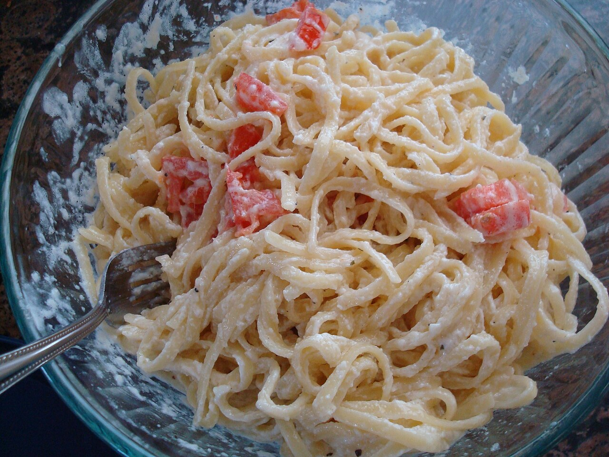

Creamy Cheese Garlic Pasta
home page

Description
A rich weeknight pasta built on garlic softened in butter, cream, and a
generous handful of parmesan. The sauce comes together in the time it
takes the pasta to boil, so dinner is on the table in about 25 minutes.
Finish it with black pepper and parsley, and serve it with bread for the
leftover sauce.
Ingredients
- 1 lb fettuccine or penne
- 4 tablespoons butter
- 6 cloves garlic, minced
- 1 1/2 cups heavy cream
- 1 1/2 cups parmesan cheese, freshly grated
- 1/2 cup mozzarella cheese, shredded
- 1 teaspoon salt
- 1/2 teaspoon black pepper
- 2 tablespoons fresh parsley, chopped
Steps
-
Bring a large pot of salted water to a boil and cook the pasta until it
is just shy of tender.
-
Scoop out 1 cup of the starchy pasta water before draining, then set the
drained pasta aside.
-
Melt the butter in a wide skillet over medium-low heat and cook the
garlic for 1 to 2 minutes, until fragrant but not browned.
-
Pour in the cream, raise the heat to medium, and let it bubble gently
for 3 to 4 minutes until slightly thickened.
-
Lower the heat and stir in the parmesan and mozzarella a handful at a
time, letting each addition melt before adding more.
-
Season with the salt and pepper, then add the pasta and toss to coat,
loosening the sauce with the reserved pasta water as needed.
-
Scatter the parsley over the top and serve right away, while the sauce
is still silky.
Photo by Robert Banh,
CC BY 2.0.
{kind=link}